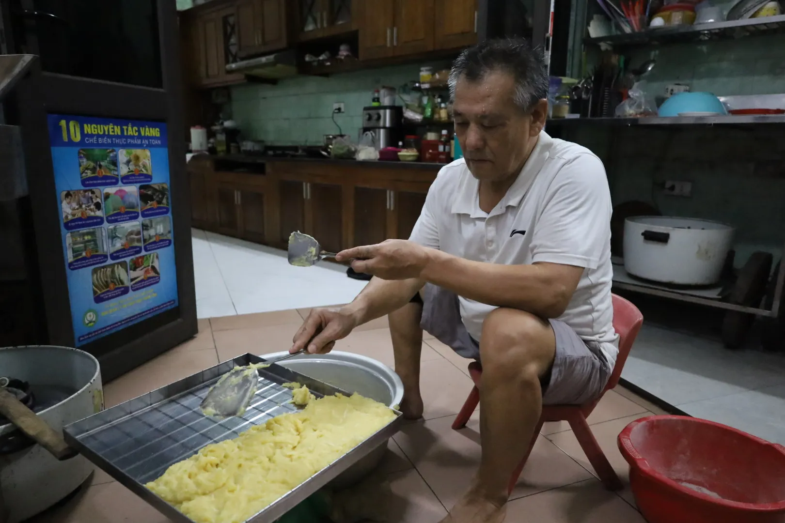
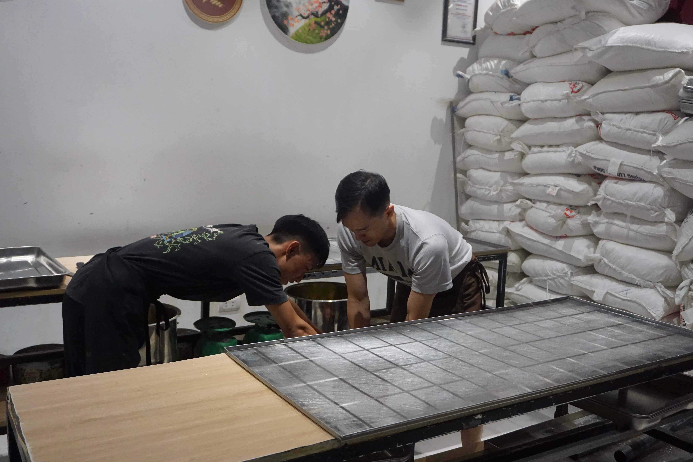

Nếu chỉ nhìn thoáng qua, chiếc bánh phu thê cũng bình dị như bao thức quà quê khác. Nhưng khi sợi lạt đỏ được tháo mở, lớp lá dong xanh tước đi để lộ phần bánh bên trong, người ta mới thực sự cảm nhận được sự tinh tế và khéo léo của những nghệ nhân Đình Bảng. Chiếc bánh ấy không chỉ là sự kết hợp hài hòa giữa các nguyên liệu, mà là một sự cân bằng hoàn hảo giữa thị giác và hương vị.


Để có được một mẻ bánh phu thê thành công, người làm bánh cần phải kỹ càng ngay từ khâu chọn lọc nguyên liệu. Lớp áo ngoài cùng là lá dong xanh mướt giữ vai trò bảo bọc, ấp ủ lấy lớp lá chuối lót bên trong. Ẩn dưới sự bảo bọc ấy là phần vỏ bánh có màu vàng, dẻo dai làm từ bột nếp cái hoa vàng và nước cốt quả dành dành.
Nằm trong cùng là phần nhân đậu xanh, hạt sen sên đường mịn màng, điểm xuyết thêm những sợi dừa nạo trắng đan xen vào nhau. Nhân đậu xanh tròn trịa nằm gọn trong lớp vỏ vuông vức, gợi nhắc về quan niệm "Trời tròn, Đất vuông" của người Việt. Hình vuông tượng trưng cho sự vững chãi, che chở của người chồng. Hình tròn đại diện cho sự vẹn toàn, tần tảo của người vợ.


Các công đoạn chế biến nhân đậu xanh


Để có nhiều cặp bánh tươi ngon phục vụ khách trong ngày đại hội, nhiều nghệ nhân ở Đình Bảng thường phải bắt đầu công việc từ lúc 3, 4 giờ sáng.
Người thợ không chỉ làm bánh bằng công thức, mà bằng cả sự nâng niu. Việc chờ nhân nguội, đợi bột trong, hay việc cẩn thận từng sợi lạt hồng không chỉ là kỹ thuật, mà là cách người nghệ nhân gửi gắm sự trân trọng, chúc phúc cho tình yêu đôi lứa.
Sự tinh tế của các nguyên liệu còn được thể hiện qua sự cân bằng Ngũ Hành trong triết học phương Đông. Mỗi nguyên liệu trong cặp bánh đều đại diện cho một nguyên tố, tạo nên sự cân bằng trong quy luật tương sinh, tương khắc của đất trời.
Người Kinh Bắc không bao giờ bán lẻ bánh phu thê, bởi sính lễ cưới hỏi không bao giờ được phép đơn độc. Bánh phải đi theo cặp, úp bụng vào nhau và thắt chặt bằng sợi lạt đỏ. Đó là hình ảnh của âm dương giao hòa, của hai cá thể tuy riêng biệt nhưng đã được sợi dây tơ hồng buộc chặt để cùng gắn bó, sẻ chia cuộc đời cùng nhau.
Ăn bánh phu thê không thể vội vã như những thức quà ven đường. Người thưởng thức cần sự nhẫn nại để tháo lạt, tuốt lá, nhẹ nhàng khám phá phần bánh dẻo thơm bên trong. Đó cũng chính là sự nâng niu cần có trong đời sống vợ chồng. Sau khi đi qua những thử thách của thời gian, cái kết ngọt ngào nhất chính là vị ngọt bùi của sự thấu hiểu và sẻ chia.
Cắn một miếng bánh phu thê, ta không chỉ thưởng thức món ăn. Đó là một trải nghiệm đa giác quan: cái dẻo bột nếp gạo hoà vàng, cái bùi béo, ngọt ngào phần đậu xanh và hạt sen, cái sần sật của dừa nạo. Tất cả hòa quyện vào nhau tạo thành hương vị nồng nàn và dịu ngọt, như có thể cảm nhận được tình nghĩa vợ chồng mà người Việt đã vun vén qua bao thế hệ.